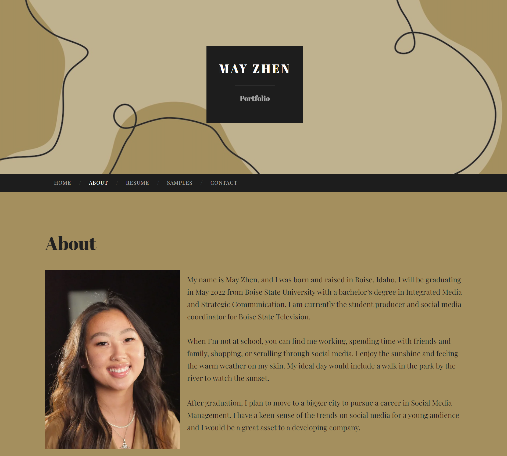

Wordpress
Using Wordpress to create a portfolio is a great idea for anyone who is pretty unfamiliar with media. It was easy to use and the website lays out the format for you. Here is the Wix portfolio I created in the past. I enjoyed this platform a lot. Coming into this assignment, I compared the two. They are both great for people wanting to create a free, good-looking portfolio. Wordpress is far more self-explanatory, whereas Wix is more complex. Wix does look more appealing to the eye with the wide variety of designs to choose from. In general, I enjoyed using both websites very much. It's useful for me to know which one I like most to use in the future.

Here is the About page in my portfolio on Wordpress.
Moving forward, I would definitely use Wordpress again in my profession. One of the best qualities of Wordpress is the fact it is free to use. It's always good finding a free platform that is also reliable. Another quality I like about Wordpress is the variety of templates to choose from. This makes it super easy for users to pick a design that suits them best. Wordpress is good, free website for users that provides a ton of template options.